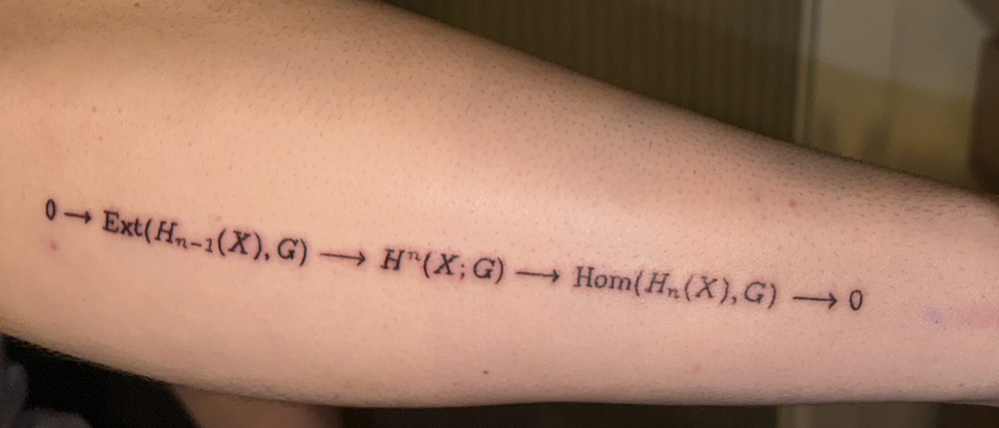
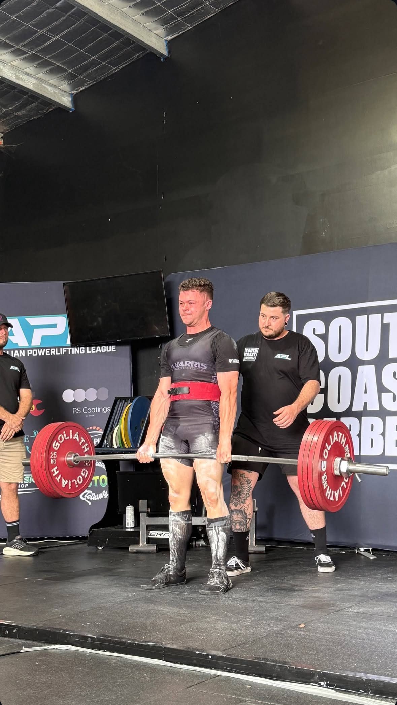

I have a tattoo of the Universal Coefficient Theorem (for cohomology) from algebraic topology. Very roughly, it's a result that tells you how different kinds of information about a space fit together.
For me, it's a reminder that complicated things often decompose into simpler pieces in maths and in life. It also makes for fun conversations when someone asks, "Wait... is that maths on your arm?"

I compete in powerlifting, which means I train the squat, bench press and deadlift with the goal of lifting as much weight as I can on the platform. I love it because progress is brutally honest: either the bar moves or it doesn't.
Training has been a big lesson in consistency, patience, and working with the body I have on any given day. It's also a really nice counterbalance to long stretches of thinking at a whiteboard.
Powerlifting has also taught me a lot about adapting training around fatigue, health, and real life; it's one of the ways I look after both my body and brain.